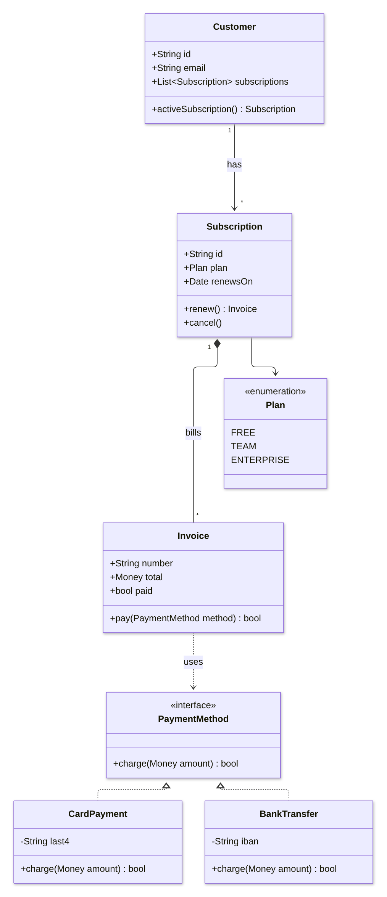

Guide · Confluence Cloud
Class diagram in Confluence Cloud: UML class diagrams, free with Mermaid
Confluence Cloud does not draw Mermaid on its own. Paste a Mermaid classDiagram block into a page and it stays a code block: readers see the classes as text, not as a UML class diagram. A Mermaid app draws it. With Mermaid Editor for Confluence, a free app on the Atlassian Marketplace, you type the classes and how they relate and the class diagram draws next to them while you type. Below: the steps, a subscription billing model to copy, how the arrows work, and the mistakes that silently change your diagram.
What Confluence Cloud does with Mermaid on its own
Confluence Cloud does not draw Mermaid itself. In our tests in October and November 2026, a ```mermaid block pasted into a page became an ordinary code block: readers see the classes as text, not the diagram. The code is kept safely, but nothing is drawn.
To see the diagram you need a Mermaid app that adds a macro to the editor, or you draw the diagram elsewhere and upload a picture. How to add Mermaid diagrams to Confluence Cloud compares those routes.
How to add a class diagram with Mermaid Editor for Confluence
Full disclosure: Dortus makes this app. The steps:
- A Confluence admin installs Mermaid Editor for Confluence from the Atlassian Marketplace. The app is free.
- Open the page in edit mode. Type
/mermaidand choose Mermaid Editor. You can also open the + insert menu in the toolbar and search for Mermaid Editor. - The editor opens with the code on the left and a live preview on the right. Click the Class example to start from a short customer and order example, or paste the example from this page. If you paste a block that starts with
```mermaid, the fences are removed for you. - Change the text. The preview redraws as you type. If a line is wrong, the preview says what is wrong and names the line, and that line is marked in the code.
- Click Insert diagram, or press Ctrl+Enter (Cmd+Enter on a Mac). Publish the page.
- To change it later, select the diagram in the editor and click the pencil icon. Versions in the editor brings back any of the last 20 saves.
On the page the diagram fits the width of the page. Hover over it, or tab to it, for the zoom buttons. Click it, or use Open large, to see it in a big window. SVG and PNG download the diagram for a slide or an email. In Confluence’s dark mode the diagram is drawn in Mermaid’s dark colours. A PDF export of the page shows the diagram as a picture, made when you click Insert diagram; a Word export shows the Mermaid code. The app has 12 examples to start from: flowchart, sequence, class, state, Gantt, pie, mindmap, timeline, journey, ER, architecture and kanban.
Where it lives: the app runs on Atlassian Forge. The Mermaid code is saved in the macro on the page, earlier versions and the picture for PDF export in Forge storage in your own Atlassian site, and the diagram is drawn in the browser of the person reading the page. No diagram text leaves your Atlassian site. The app does count a few actions, such as a diagram inserted, as anonymous numbers; the privacy policy lists them.
Example: subscription billing
The classes behind a subscription product: a customer has subscriptions, a subscription is on a plan and bills invoices, and an invoice is paid through a payment method, which can be a card or a bank transfer. Copy it and change the classes to your own code.
classDiagram
class Customer {
+String id
+String email
+List~Subscription~ subscriptions
+activeSubscription() Subscription
}
class Subscription {
+String id
+Plan plan
+Date renewsOn
+renew() Invoice
+cancel()
}
class Plan {
<<enumeration>>
FREE
TEAM
ENTERPRISE
}
class Invoice {
+String number
+Money total
+bool paid
+pay(PaymentMethod method) bool
}
class PaymentMethod {
<<interface>>
+charge(Money amount) bool
}
class CardPayment {
-String last4
+charge(Money amount) bool
}
class BankTransfer {
-String iban
+charge(Money amount) bool
}
Customer "1" --> "*" Subscription : has
Subscription "1" *-- "*" Invoice : bills
Subscription --> Plan
Invoice ..> PaymentMethod : uses
PaymentMethod <|.. CardPayment
PaymentMethod <|.. BankTransfer
Drawn with Mermaid 12.2, the version the app uses.
How the syntax works
classDiagramon the first line names the diagram type.- A class with its members goes between
{and}, one member per line. The{must be on the same line asclass Customer. - A member with brackets is a method, the rest are fields. A return type goes after the brackets:
+renew() Invoiceis drawn as+renew() : Invoice. - The sign in front is the visibility:
+public,-private,#protected,~package. - A generic type uses tildes, not angle brackets:
List~Subscription~is drawn as List<Subscription>. <<interface>>or<<enumeration>>on its own line inside the class adds a label above the name.- The arrows:
<|--inheritance,<|..implements an interface,*--composition,o--aggregation,-->association,..>dependency. The symbol sits at the end of the line where you type it. - How many goes in quotes on each side, and a label after a colon:
Customer "1" --> "*" Subscription : has.
Let an AI assistant write the first version. ChatGPT and Claude can write Mermaid. Paste a few of your classes or describe the model in plain words, ask for a Mermaid classDiagram, and paste the answer into the editor. Read the result: assistants sometimes invent a field, or use angle brackets for generics, which Mermaid drops without a word.
Common mistakes and how to fix them
- Angle brackets for a generic type.
+List<Subscription> subscriptionsgives no error, but in our test the type was drawn as just “List”. Fix:+List~Subscription~ subscriptions. - A label without a colon.
Customer --> Order hasgives no error, but the class was drawn as “Orderhas” and the line had no label. Fix:Customer --> Order : has. - The
{on the next line.class Customerwith the{on its own line below is an error, and the editor names the line with the{. Fix:class Customer {on one line. - Numbers without quotes.
Customer "1" --> * Orderis an error. Fix: put both sides in quotes,"1"and"*". - A one-dash arrow.
Customer -> Order : placesis an error in a class diagram. Fix:-->, with two dashes.
Other ways
Other Mermaid apps exist on the Atlassian Marketplace; the Mermaid guide lists points worth comparing. If your team already writes PlantUML, a PlantUML app for Confluence does the same job in that language. For a class diagram you want to lay out by hand, with every box placed exactly, a drawing app such as draw.io fits better. For database tables rather than classes, see the ER diagram guide.
FAQ
Can Confluence Cloud draw a UML class diagram from text?
Not on its own. In our tests a pasted Mermaid classDiagram block stayed a code block. A Mermaid app such as Mermaid Editor for Confluence draws the class diagram on the page.
How do I show inheritance in a Mermaid class diagram?
Use <|-- between the two classes, with the parent on the side of the <|. For example Animal <|-- Dog. For a class that implements an interface, use the dotted version, <|.. .
How do I write a generic type such as List<Order>?
Use tildes instead of angle brackets: List~Order~. Mermaid draws it as List<Order>. With angle brackets the type part is dropped without an error.
How do I mark an interface or an enum?
Put <<interface>> or <<enumeration>> on its own line inside the class, before the members. Mermaid draws it as a label above the class name.
Can the app read my code and draw the diagram?
No. Mermaid Editor for Confluence draws what you type; it does not read a code repository. You can paste your classes into ChatGPT or Claude, ask for a Mermaid classDiagram, and check the result in the editor.
By diagram type
A class diagram shows the classes in your code and how they relate. Mermaid diagram examples for Confluence has a short example of each of twelve diagram types. Guides that go deeper on one type:
- Gantt charts in Confluence Cloud
- Sequence diagrams in Confluence Cloud
- Mind maps in Confluence Cloud
- ER diagrams (entity relationship) in Confluence Cloud
- State diagrams in Confluence Cloud
- Timelines in Confluence Cloud
- Pie charts in Confluence Cloud
- Flowcharts in Confluence Cloud
Questions
An example that does not draw for you, or a mistake we missed? Email support@dortus.com.
Mermaid Editor for Confluence by Dortus
Type the diagram, watch it draw
A Confluence macro with Mermaid code on the left and a live preview on the right. The code stays in the page, so the diagram stays editable. Runs on Atlassian Forge.
Get it free on the Atlassian Marketplace
Not a Confluence admin? In Confluence, open Apps, then Explore apps, search for Mermaid Editor for Confluence and send a request. Your admin gets an email and can install it.
See also: How to add Mermaid diagrams to Confluence Cloud (including diagrams from ChatGPT or Claude)